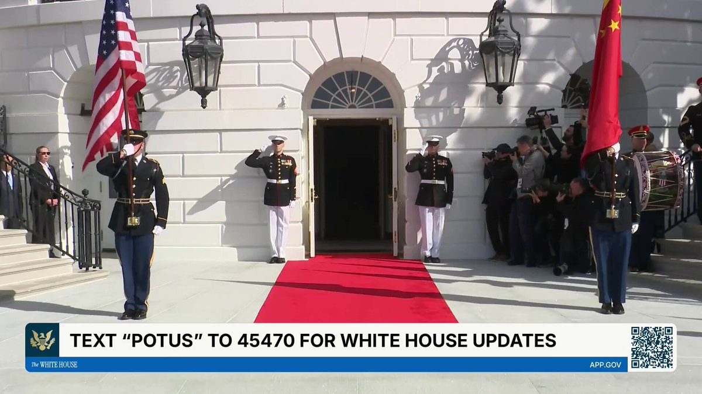

▶ Watch on XPresident Donald J. Trump and First Lady Melania Trump greet Xi Jinping, President of The People’s Republic of China, and Madame Peng Liyuan to the White House for their official state visit.
🚨NEW: A few notable developments in crypto today:
📌 @Ondo partnered with @BlackRock to launch three onchain investment portfolios using strategies developed by the asset manager. For now, they’re available only to eligible investors outside the U.S.
📌 @ARKInvest is tokenizing its venture fund on Ethereum with @Securitize.
📌 The @FederalReserve proposed two new stablecoin rules under the GENIUS Act. One sets out reserve, capital, custody and risk management requirements for issuers it supervises. The other lays out how banks it oversees can apply to issue stablecoins.
📌 @CFTC staff clarified that registered derivatives firms can hold certain customer investments as tokens and use blockchain records to meet federal recordkeeping rules.
@federalreserve requests public comment on two proposals related to establishing a regulatory framework for Board-supervised payment stablecoin issuers under the GENIUS Act:
.@CFTC Staff Releases Updates to FAQs Concerning Registrants and Registered Entity Activities Relating to Crypto Assets and Blockchain Technologies:
JUST IN: 🇨🇳🇺🇸 Chinese President XI Jinping and US President Trump at the White House.
JUST IN: Trump reveals “the entire tech world, the entire banking world, and a lot more” will attend tomorrow night’s state dinner for Chinese President Xi Jinping.
JUST IN: 🇨🇳🇺🇸 Chinese President Xi Jinping says he is confident his US trip will produce positive results.
EXIM Signs $7 Billion U.S.-Argentina Build the Future Framework
NEW YORK, NY — Today, the Export-Import Bank of the United States (EXIM) signed a U.S.-Argentina Build the Future Framework with the Government of Argentina to mobilize financing of up to $7 billion through 2027 for priority sectors, including critical minerals development and processing, energy security and grid modernization, digital connectivity and secure systems, and commercial space and advanced technologies.
“EXIM is moving boldly into the industries of the future. To do this, we must secure our supply chains, support American jobs, and ensure American workers, products, and expertise reach all parts of the Western Hemisphere,” said EXIM Chairman John Jovanovic. “We’re proud to enter into such an important partnership with Argentina and excited to see our two countries grow together.”
The framework will allow both parties to deepen economic ties, support U.S. job growth, and contribute to Argentina’s infrastructure development.
Cooperation may include the support of critical minerals development and processing of Argentina’s strategic mineral resources through the deployment of U.S. equipment, technologies, mining expertise, and related infrastructure. The initiatives are consistent with the Bank’s Supply Chain Resiliency Initiative (SCRI).
Without even allowing the government a chance to respond, and in the dark of night, a federal appeals court blocked us from conducting all third-country removals of illegal aliens, an entirely legal and invaluable tool to stem the tide of illegal immigration. We will immediately seek relief from the Supreme Court, which previously granted a stay in this very same case.
Our message to corporate America is simple: We’re not going to let you lay off American workers so you can replace them with cheap foreign labor.
#BREAKING: Over 700,000 U.S. tech jobs were cut and 670,000 H-1B visas were issued to Indians since 2022.
White House Ballroom Architect Resigned After Warning Trump’s Designs Violated Fire and Safety Codes; President Reportedly Said “I Am the Code” — WaPo
JUST IN: 🇷🇺 Russia preparing limited strike on NATO to disrupt support for Ukraine, intelligence report claims.
JUST IN: CEO confidence in the U.S. economy surges to its highest level in 4 years.